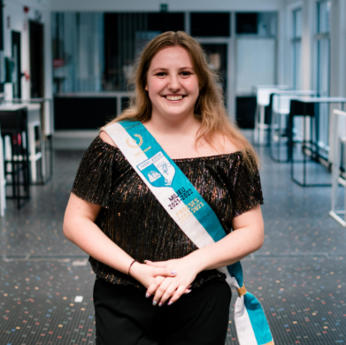
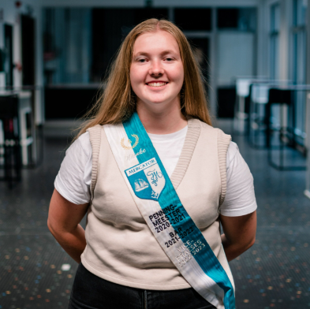
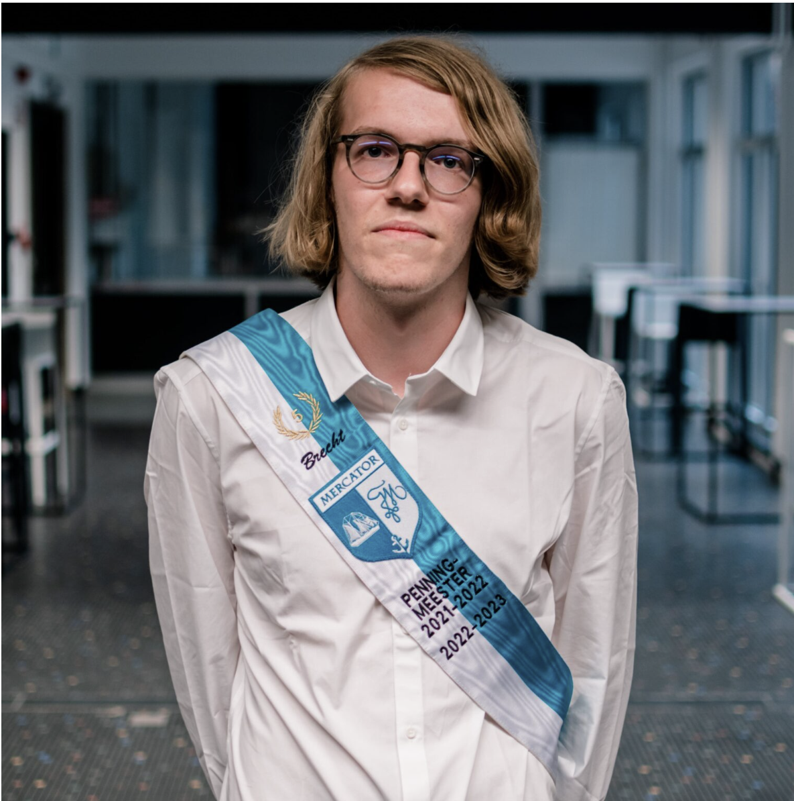
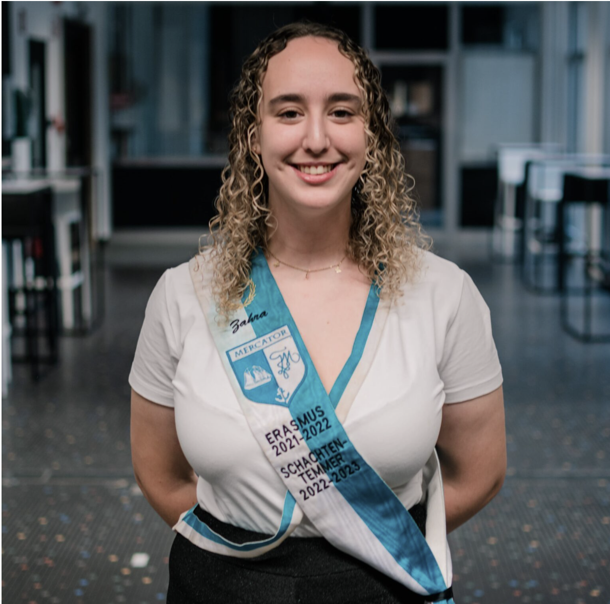
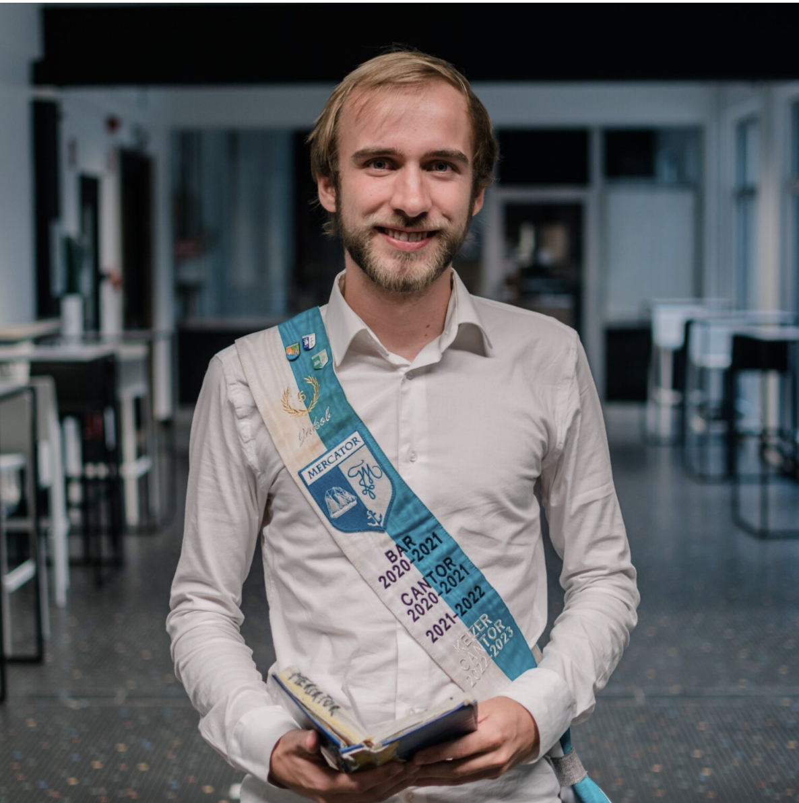
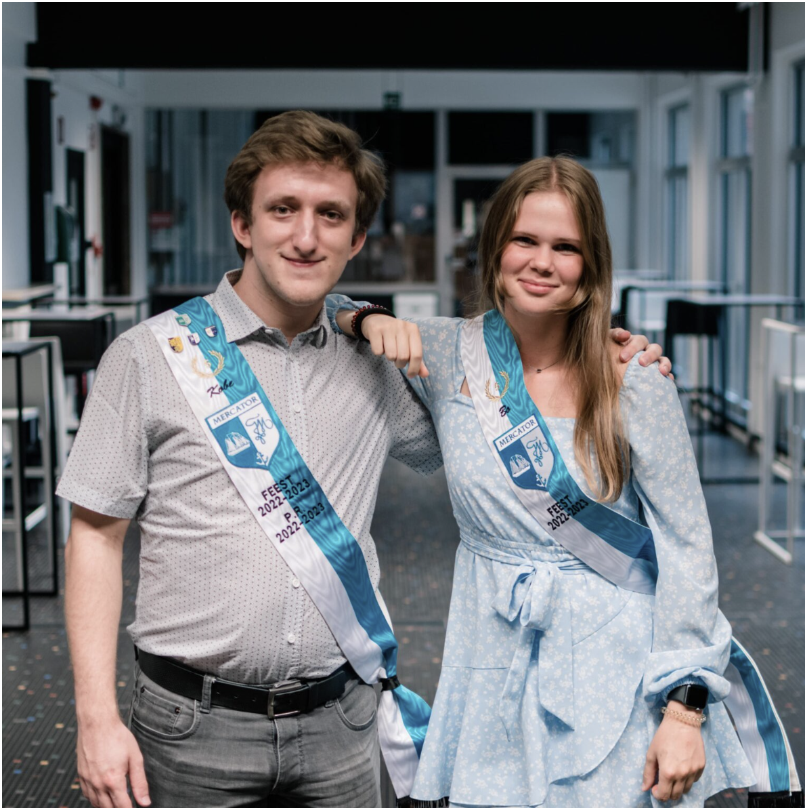
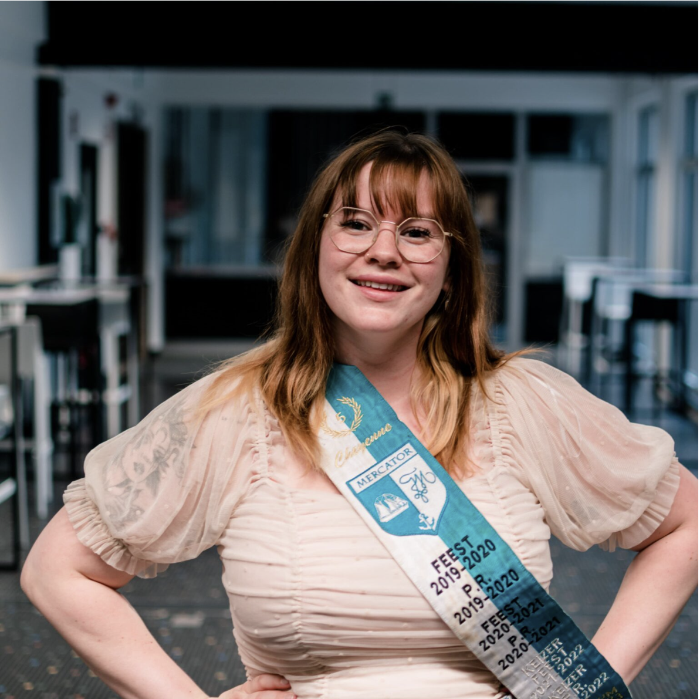
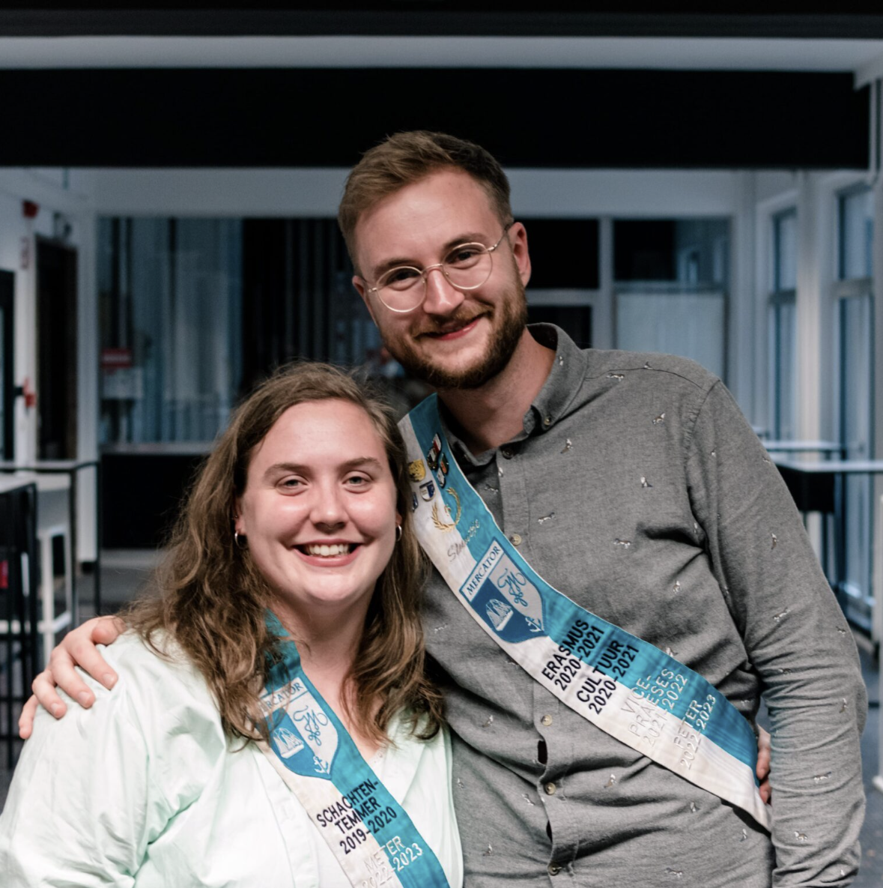

Praesidium 2022-2023
Praeses

Maren Tanghe
Studeert: Sociaal werk
Geboren op: 23/01/2003
Woont in: Ichtegem/Kortemark
Ik ben momenteel: Stervende
Favoriete:
- Cantusliedje: Ach liefelijke meisjes
- Maaltijd op kot: Dingen die in de airfryer kan
- Pokémon: Squirtle
Leukste herinnering aan Mercator: "De cantussen (en dus geen herinneringen hebben lol)"
Vice-Praeses

Nienke Demuynck
Studeert: Account Administration
Geboren op: 04/10/2001
Woont in: West-Vlaanderen, alle boerendorpen lijken toch op elkaar
Ik ben momenteel: Blij
Favoriete:
- Cantusliedje: Jucheidi
- Maaltijd op kot: Rijst met kip en currysaus, nomnom
- Pokémon: Piplup
Leukste herinnering aan Mercator: "Praesidiumweekend!"
Secretaris
Janne De Clercq
Studeert: Verpleegkunde
Geboren op: 08/05/2001
Woont in: Elversele
Ik ben momenteel: Single
Favoriete:
- Cantusliedje: Kan der geen uitkiezen
- Maaltijd op kot: Kip curry
- Pokémon: Die blauwe met groen
Leukste herinnering aan Mercator: "De welkomstbar"
Penningmeester

Brecht Blokerije
Studeert: Accountancy & Fiscaliteit
Geboren op: 12/12/2001
Woont in: Affligem
Ik ben momenteel: Hopeloos
Favoriete:
- Cantusliedje: Clublied van Mercator
- Maaltijd op kot: Frietjes van de frituur
- Pokémon: Munchlax
Leukste herinnering aan Mercator: "Baravoden"
Schachtentemmer

Zahra Regeer
Studeert: Marketing en communicatie support
Geboren op: 23/12/2001
Woont in: Essen, Antwerpen
Ik ben momenteel: Van men single leven aan het genieten
Favoriete:
- Cantusliedje: Home on the range (grapje)
- Maaltijd op kot: PASTAAAA
- Pokémon: ??
Leukste herinnering aan Mercator: "Het praesidium weekend en de massacantus."
Cantor

Jakob Van der Vennet
Studeert: Af en toe eens geschiedenis
Geboren op: 14/09/2000
Woont in: Gent (eigenlijk Aalter)
Ik ben momenteel: Waarschijnlijk aan het cantussen
Favoriete:
- Cantusliedje: Momenteel fan van John Brown's Song
- Maaltijd op kot: Pizza yummie
- Pokémon: Alleszins niet Magikarp
Leukste herinnering aan Mercator: "De piratencantus, echt epische avond"
Zeden
Griffin Woodgate
Studeert: Programmeren
Geboren op: 31/05/2000
Woont in: Lampernisse city
Ik ben momenteel: een hoer
Favoriete:
- Cantusliedje: gaudeamus igitur
- Maaltijd op kot: ✌️
- Pokémon: ✌️
Leukste herinnering aan Mercator: "eerste massacantus, in de bieremmer gebarfd woppa"
Bar
Janne De Clercq
Studeert: Verpleegkunde
Geboren op: 08/05/2001
Woont in: Elversele
Ik ben momenteel: Single
Favoriete:
- Cantusliedje: Kan der geen uitkiezen
- Maaltijd op kot: Kip curry
- Pokémon: Die blauwe met groen
Leukste herinnering aan Mercator: "De welkomstbar"
Feest

Kobe Gregoire
Studeert: Animatiefilm
Geboren op: 19/11/2001
Woont in: Zarlardinge
Ik ben momenteel: Zat
Favoriete:
- Cantusliedje: Jan Klaassen de trompetter
- Maaltijd op kot: takeaway.com
- Pokémon: Spheal
Leukste herinnering aan Mercator: "De jeneverwandeling van vorig jaar."
Bo Swyzen
Studeert: Interieurvormgeving
Geboren op: 18/04/2001
Woont in: Temse
Ik ben momenteel: In een relatie
Favoriete:
- Cantusliedje: anne Marieke
- Maaltijd op kot: Kapsalon
- Pokémon: EeVee want ik ben basic
Leukste herinnering aan Mercator: "Ladies night op Mercator met daarna de standaard hang out bij Maarten thuis"
PR
Kobe Gregoire
Studeert: Animatiefilm
Geboren op: 19/11/2001
Woont in: Zarlardinge
Ik ben momenteel: Zat
Favoriete:
- Cantusliedje: Jan Klaassen de trompetter
- Maaltijd op kot: takeaway.com
- Pokémon: Spheal
Leukste herinnering aan Mercator: "De jeneverwandeling van vorig jaar."
Sport
Gilles De Zutter
Studeert: Financiën en verzekeringen
Geboren op: 12/02/1998
Woont in: Gentbrugge
Ik ben momenteel: Moe
Favoriete:
- Cantusliedje: Mercator clublied/Erika
- Maaltijd op kot: Tacos
- Pokémon: Articuno
Leukste herinnering aan Mercator: "12 urenloop"
Lustrum

Cheyenne Peynsaert
Studeert: Helemaal niets meer, studeerde event & projectmanagement en ook marketing
Geboren op: 29/11/1996
Woont in: Gent, het beste ent
Ik ben momenteel: In een relatie
Favoriete:
- Cantusliedje: ALOUETTE
- Maaltijd op kot: Kip met rijst en currysaus van Knorr
- Pokémon: Eevee; cute met meerdere persoonlijkheden just like me
Leukste herinnering aan Mercator: "De eerste fuif die ik mocht organiseren (winter is coming – game of THRONES fuif)"
Meter & Peter

Michèle Grymonprez
Studeert: Afgestudeerd
Geboren op: /
Woont in: Gent
Ik ben momenteel: In een relatie
Favoriete:
- Cantusliedje: /
- Maaltijd op kot: /
- Pokémon: /
Leukste herinnering aan Mercator: /
Maarten Mahieu
Studeert: niet
Geboren op: Mijn verjaardag
Woont in: een appartement
Ik ben momenteel: Net wakker
Favoriete:
- Cantusliedje: Anne-Marieken
- Maaltijd op kot: Lasagne van de Aldi
- Pokémon: Totodille
Leukste herinnering aan Mercator: "Alle cantussen gaan zwijnen met mijn cantusbroeders Griffin en Jakob"
Vertrouwenspersonen
Michèle Grymonprez & Maarten Mahieu
"De vertrouwenspersonen zijn er om je te helpen wanneer je vragen of problemen hebt waarmee je niet meteen weet naar wie je moet gaan ermee. Zij kunnen je verder helpen en doorverwijzen indien nodig. Ze zijn er ook altijd als je gewoon eens nood hebt aan een babbel."
Door hun statuut van vertrouwenspersoon zijn ze verplicht te zwijgen over wat hun in vertrouwen verteld wordt.